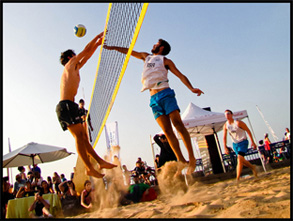

Slammers Beach Volleyball Slammers Beach Volleyball
Slammers Beach Volleyball Slammers Beach Volleyball Volleyball is a team sport played by two teams on a playing court divided by a net.
The sport originated in the United States, and is now just achieving the type of popularity in the U.S. that it has received on a global basis, where it ranks behind only soccer among participation sports.
There are 800 million players worldwide who play Volleyball at least once a week.
The object of the game is for each team to send the ball regularly over the net to ground it on the opponent's court, and to prevent the ball from being grounded on its own court. The ball is put into play by the right back-row player who serves the ball by hitting it over the net to the opponent's court. A team is allowed to hit the ball three times (in addition to the block contact) to return it to the opponent's court. A player is not allowed to hit the ball twice consecutively, except when attempting a block. The rally continues until the ball touches the ground/floor, goes "out" or a team fails to return it to the opponent's court or commits a fault.
The team winning a rally scores a point (Rally Point System). When the receiving team wins a rally, it gains a point and the right to serve, and its players rotate one position clockwise.
The best of three or best of five games will win matches. Each non-deciding game will be won by the team that first scores 25 points with a minimum two-point advantage (no scoring cap). If there is a deciding game, it will be won by the team that first scores 15 points with a minimum two-point advantage (no scoring cap).